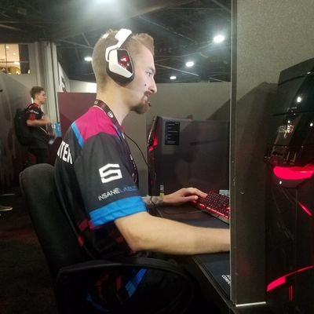
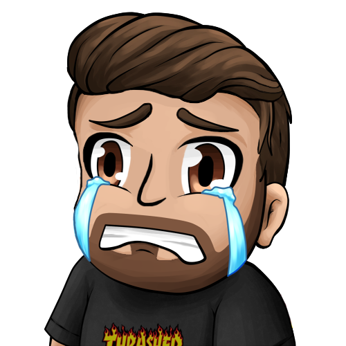

About Me
Hello! thanks for stopping by my website! Looks like youre interested in type of computer builds or the world of gaming, well you've came to the right place! My name is Devon Nagy, and i have been playing video games since i could walk, starting with n64. As well as building my first PC when I was just 14 years old. I started playing video games competitively during my 8th grade year when Call of Duty 4 came out. All those hours finally paid off, since i started playing video games at a professional level at the age of 18, made countless memories and friends and i wouldnt change it for the world.
Showcase
!WARNING!This clip has explicit language.
This is a video of the world famous gamer "Ninja" and I having a
battle in a game called H1Z1. We both were professionals in the game, competing against
eachother in online scrims and real life tournaments such as DreamHack Elite Series in Atlanta and Sweden.
- Tyler "Ninja" Blevins is the first person in esports history to make over $500,000 a month playing video games.
Personal Training
Our staff members here will help push you to become the best gamer/content creator you could imagine. By giving you a platform to help grow your brand, as well as getting deals on G-FUEL and finding out the best computer builds before anyone else.
- Accountability
- Personalized Program
- Consistent Support and Motivation
- Graphics For Your Stream!
Common Stretches
The following are common stretches that we encourage our clients to do as part of their daily exercise routine. Hand cramps or arthritis is never a fun thing to get.
- Hand Stretches
- Pull your fingers back, towards to top of your hand for 5-10 seconds. Also wiggle your wrist to reduce the chance of carpal tunnel syndrome.
- Walk Around
- Sitting on a computer chair all day can be really bad for your back/posture. Don't forget to stand up and stretch, even walk around after sitting for a constant 1-2 hours. This will help you in the long run.
For more information about new computer builds, visit batestech.edu.